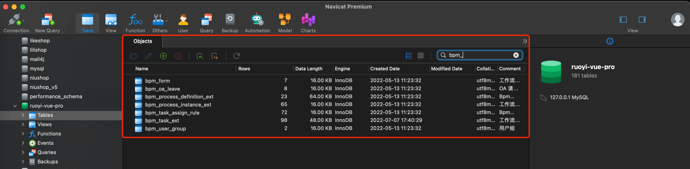
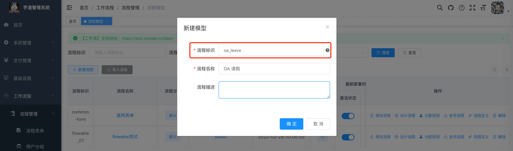

会签或签
工作流（Flowable）会签、或签
项目基于 Flowable 实现了工作流的功能。本章节，我们将介绍工作流的相关功能。
以请假流程为例，讲解系统支持的两种表单方式的工作流：
- 流程表单：在线配置动态表单，无需建表与开发
- 业务表单：业务需建立独立的数据库表，并开发对应的表单、详情界面
整个过程包括：
- 定义流程：【管理员】新建流程、设计流程模型、并设置用户任务的审批人，最终发布流程
- 发起流程：【员工】选择流程，并发起流程实例
- 审批流程：【审批人】接收到流程任务，审批结果为通过或不通过
- 01、如何集成 Flowable 框架？(opens new window)
- 02、如何实现动态的流程表单？(opens new window)
- 03、如何实现流程表单的保存？(opens new window)
- 04、如何实现流程表单的展示？(opens new window)
- 05、如何实现流程模型的新建？(opens new window)
- 06、如何实现流程模型的流程图的设计？(opens new window)
- 07、如何实现流程模型的流程图的预览？(opens new window)
- 08、如何实现流程模型的分配规则？(opens new window)
- 09、如何实现流程模型的发布？(opens new window)
- 10、如何实现流程定义的查询？(opens new window)
- 11、如何实现流程的发起？(opens new window)
- 12、如何实现我的流程列表？(opens new window)
- 13、如何实现流程的取消？(opens new window)
- 14、如何实现流程的任务分配？(opens new window)
- 15、如何实现会签、或签任务？(opens new window)
- 16、如何实现我的待办任务列表？(opens new window)
- 17、如何实现我的已办任务列表？(opens new window)
- 18、如何实现任务的审批通过？(opens new window)
- 19、如何实现任务的审批不通过？(opens new window)
- 20、如何实现流程的审批记录？(opens new window)
- 21、如何实现流程的流程图的高亮？(opens new window)
- 22、如何实现工作流的短信通知？(opens new window)
- 23、如何实现 OA 请假的发起？(opens new window)
- 24、如何实现 OA 请假的审批？(opens new window)
#0. 如何开启 bpm 模块？
yudao-module-bpm 模块默认未启用，需要手动开启。步骤如下：
① 第一步，修改根目录的 pom.xml (opens new window)文件，取消 yudao-module-bpm 模块的注释。
② 第二步，修改 yudao-server 的 pom.xml (opens new window)文件，取消 yudao-module-bpm-biz 依赖的注释，并进行 IDEA 的 Maven 刷新。
③ 第三步，点击 bpm.sql 下载，然后导入到数据库中。
友情提示：↑↑↑ bpm.sql 是可以点击下载的！ ↑↑↑
④ 第四步，重启项目，看到 Property Source flowable-liquibase-override refreshed 说明开启成功。
另外，启动过程中，Flowable 会自动创建 ACT_ 和 FLW_ 开头的表。
如果启动中报 MySQL “Specified key was too long; max key length is 1000 bytes” (opens new window)错误，可以将 MySQL 的缺省存储引擎设置为 innodb，即 default-storage-engine=innodb 配置项。
#1. 请假流程【流程表单】
#1.1 第一步：定义流程
登录账号 admin、密码 admin123 的用户，扮演【管理员】的角色，进行流程的定义。
① 访问 [工作流程 -> 流程管理 -> 流程模型] 菜单，点击 [新建流程] 按钮，填写流程标识、流程名称。如下图所示：
- 流程标识：对应 BPMN 流程文件 XML 的
id属性，不能重复，新建后不可修改。 - 流程名称：对应 BPMN 流程文件 XML 的
name属性。
<!-- 这是一个 BPMN XML 的示例，主要看 id 和 name 属性 --> |
② 访问 [工作流程 -> 流程管理 -> 流程表单] 菜单，点击 [新增] 按钮，新增一个名字为 leave-form 的表单。如下图所示：
流程表单的实现？
基于 https://github.com/JakHuang/form-generator (opens new window)项目实现的动态表单。
回到 [工作流程 -> 流程管理 -> 流程模型] 菜单，点击 [修改流程] 按钮，配置表单类型为流程表单，选择名字为 leave-form 的流程表单。如下图所示：
③ 点击 [设计流程] 按钮，在线设计请假流程模型，包含两个用户任务：领导审批、HR 审批。如下图所示：
设计流程的实现？
基于 https://github.com/miyuesc/bpmn-process-designer (opens new window)项目实现，它的底层是 bpmn-js (opens new window)。
④ 点击 [分配规则] 按钮，设置用户任务的审批人。其中，规则类型用于分配用户任务的审批人，目前有 7 种规则：角色、部门成员、部门负责人、岗位、用户、用户组、自定义脚本，基本可以满足绝大多数场景，是不是非常良心。
设置【领导审批】的规则类型为自定义脚本 + 流程发起人的一级领导，如下图所示：

设置【HR 审批】的规则类型为岗位 + 人力资源，如下图所示：
规则类型的实现？
可见 BpmUserTaskActivityBehavior (opens new window)代码，目前暂时支持分配一个审批人。
⑤ 点击 [发布流程] 按钮，把定义的流程模型部署出去。部署成功后，就可以发起该流程了。如下图所示：
修改流程后，需要重新发布流程吗？
需要，必须重新发布才能生效。每次流程发布后，会生成一个新的流程定义，版本号从 v1 开始递增。
发布成功后，会部署新版本的流程定义，旧版本的流程定义将被挂起。当然，已经发起的流程不会受到影响，还是走老的流程定义。
#1.2 第二步：发起流程
登录账号 admin、密码 admin123 的用户，扮演【员工】的角色，进行流程的发起。
① 访问 [工作流程 -> 任务管理 -> 我的流程] 菜单，点击 [发起流程] 按钮，可以看到可以选择的流程定义的列表。
② 选择名字为通用表单的流程定义，发起请假流程。填写请假表单信息如下：
③ 点击提交成功后，可在我的流程中，可看到该流程的状态、结果。
④ 点击 [详情] 按钮，可以查看申请的表单信息、审批记录、流程跟踪图。
#1.2 第三步：审批流程（领导审批）
登录账号 test、密码 test123 的用户，扮演【审批人】的角色，进行请假流程的【领导审批】任务。
① 访问 [工作流程 -> 任务管理 -> 待办任务] 菜单，可以查询到需要审批的任务。
② 点击 [审批] 按钮，填写审批建议，并点击 [通过] 按钮，这样任务的审批就完成了。
③ 访问 [工作流程 -> 任务管理 -> 已办任务] 菜单，可以查询到已经审批的任务。
此时，使用【员工】的角色，访问 [工作流程 -> 任务管理 -> 我的流程] 菜单，可以看到流程流转到了【HR 审批】任务。
#1.3 第三步：审批流程（HR 审批）
登录账号 hrmgr、密码 hr123 的用户，扮演【审批人】的角色，进行请假流程的【HR 审批】任务。
① 访问 [工作流程 -> 任务管理 -> 待办任务] 菜单，点击 [审批] 按钮，填写审批建议，并点击 [通过] 按钮。
此时，使用【员工】的角色，访问 [工作流程 -> 任务管理 -> 我的流程] 菜单，可以看到流程处理结束，最终审批通过。
#2. 请假流程【业务表单】
根据业务需要，业务通过建立独立的数据库表（业务表）记录申请信息，而流程引擎只负责推动流程的前进或者结束。两者需要进行双向的关联：
- 每一条业务表记录，通过它的流程实例的编号(
process_instance_id)指向对应的流程实例 - 每一个流程实例，通过它的业务键(
BUSINESS_KEY_) 指向对应的业务表记录。
以项目中提供的 OALeave (opens new window)请假举例子，它的业务表 bpm_oa_leave 和流程引擎的流程实例的关系如下图：
也因为业务建立了独立的业务表，所以必须开发业务表对应的列表、表单、详情页面。不过，审核相关的功能是无需重新开发的，原因是业务表已经关联对应的流程实例，流程引擎审批流程实例即可。
下面，我们以项目中的 OALeave (opens new window)为例子，详细讲解下业务表单的开发与使用的过程。
#2.0 第零步：业务开发
① 新建业务表 bpm_oa_leave，建表语句如下：
CREATE TABLE `bpm_oa_leave` ( |
process_instance_id字段，关联流程引擎的流程实例对应的ACT_HI_PROCINST表的PROC_INST_ID_字段result字段，请假结果，需要通过 Listener 监听回调结果，稍后来看看
② 实现业务表的【后端】业务逻辑，具体代码可以看看如下两个类：
重点是看流程发起的逻辑，它定义了 /bpm/oa/leave/create 给业务的表单界面调用，UML 时序图如下：
具体的实现代码比较简单，如下图所示：
PROCESS_KEY静态变量：是业务对应的流程模型的编号，稍后会进行创建编号为 oa_leave 的流程模型。- BpmProcessInstanceApi (opens new window)定义了
#createProcessInstance(...)方法，用于创建流程实例，业务无需关心底层是 Activiti 还是 Flowable 引擎，甚至未来可能的 Camunda 引擎。
③ 实现业务表的【前端】业务逻辑，具体代码可以看看如下三个页面：
leave/create.vue(opens new window)leave/detail.vue(opens new window)leave/index.vue(opens new window)
另外，在 router/index.js (opens new window)中定义 create.vue 和 detail.vue 的路由，配置如下：
{ |
为什么要做独立的 create.vue 和 index.vue 页面？
- 创建流程时，需要跳转到
create.vue页面，填写业务表的信息，才能提交流程。 - 审批流程时，需要跳转到
detail.vue页面，查看业务表的信息。
④ 实现业务表的【后端】监听逻辑，具体可见 BpmOALeaveResultListener (opens new window)监听器。它实现流程引擎定义的 BpmProcessInstanceResultEventListener (opens new window)抽象类，在流程实例结束时，回调通知它最终的结果是通过还是不通过。代码如下图：
至此，我们了解了 OALeave 使用业务表单所涉及到的开发，下面我们来定义对应的流程、发起该流程、并审批该流程。
#2.1 第一步：定义流程
登录账号 admin、密码 admin123 的用户，扮演【管理员】的角色，进行流程的定义。
① 访问 [工作流程 -> 流程管理 -> 流程模型] 菜单，点击 [新建流程] 按钮，填写流程标识、流程名称。如下图所示：
注意，流程标识需要填 oa_leave。因为在 BpmOALeaveServiceImpl 类中，规定了对应的流程标识为 oa_leave。
② 点击 [修改流程] 按钮，配置表单类型为业务表单，填写表单提交路由为 /bpm/oa/leave/create（用于发起流程时，跳转的业务表单的路由）、表单查看路由为 /bpm/oa/leave/detail（用于在流程详情中，点击查看表单的路由）。如下图所示：
③ 点击 [设计流程] 按钮，在线设计请假流程模型，包含两个用户任务：领导审批、HR 审批。如下图所示：
可以点击 oa_leave_bpmn.XML 进行下载，然后点击 [打开文件] 按钮，进行导入。
④ 点击 [分配规则] 按钮，设置用户任务的审批人。
- 设置【领导审批】的规则类型为自定义脚本 + 流程发起人的一级领导，如下图所示：
- 设置【HR 审批】的规则类型为岗位 + 人力资源，如下图所示：

⑤ 点击 [发布流程] 按钮，把定义的流程模型部署出去。部署成功后，就可以发起该流程了。
#2.1 第二步：发起流程
登录账号 admin、密码 admin123 的用户，扮演【员工】的角色，进行流程的发起。
① 发起业务表单请假流程，两种路径：
访问 [工作流程 -> 任务管理 -> 我的流程] 菜单，点击 [发起流程] 按钮，会跳转到流程模型 oa_leave 配置的表单提交路由。
<img src=”会签或签/25.png” alt=”路径一：我的流程 - style=”zoom:67%;” > 发起流程” />
访问 [工作流程 -> 请假查询] 菜单，点击 [发起请假] 按钮。
<img src=”会签或签/26.png” alt=”路径二：请假查询 - style=”zoom:67%;” > 发起请假” />
② 填写一个小于等于 3 天的请假，只会走【领导审批】任务；填写一个大于 3 天的请假，在走完【领导审批】任务后，会额外走【HR 审批】任务。
后续的流程，和「1. 请假流程【流程表单】」是基本一致的，这里就不重复赘述，当然你还是要试着跑一跑，了解整个的过程。
#2.3 第三步：审批流程（领导审批）
略~自己跑
#2.4 第三步：审批流程（HR 审批）
略~自己跑
#2. 流程通知
流程在发生变化时，会发送通知给相关的人。目前有三个场景会有通知，通过短信的方式。
#3. 流程图示例
#3.1 会签
定义：指同一个审批节点设置多个人，如 ABC 三人，三人会同时收到审批，需全部同意之后，审批才可到下一审批节点。
配置方式如下图所示：
重点是【完成条件】为 ${ nrOfCompletedInstances== nrOfInstances }。
#3.2 或签
定义：指同一个审批节点设置多个人，如ABC三人，三人会同时收到审批，只要其中任意一人审批即可到下一审批节点。
配置方式如下图所示：
重点是【完成条件】为 ${ nrOfCompletedInstances== 1 }。
#4. 如何使用 Activiti？
Activiti 和 Flowable 提供的 Java API 是基本一致的，例如说 Flowable 的 org.flowable.engine.RepositoryService 对应 Activiti 的 org.activiti.engine .RepositoryService。所以，我们可以修改 import 的包路径来替换。
另外，在项目的老版本，我们也提供了 Activiti 实现，你可以具体参考下：
yudao-spring-boot-starter-activiti(opens new window)yudao-module-bpm-biz-activiti(opens new window)
#4. 迭代计划
工作流的基本功能已经开发完成，当然还是有很多功能需要进行建设。已经整理在 https://gitee.com/zhijiantianya/ruoyi-vue-pro/issues/I4UPEU (opens new window)链接中，你也可以提一些功能的想法。
如果您有参与工作流开发的想法，可以添加我的微信 wangwenbin10 ！
艿艿会带着你做技术方案，Code Review 你的每一行代码的实现。相信在这个过程中，你会收获不错的技术成长！
 wechat
wechat alipay
alipay